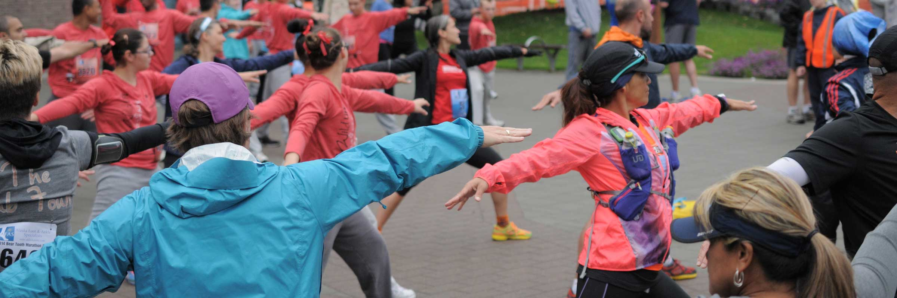

AUGUST 20 & 21, 2016

Training Tips
- Train your gut. Training your stomach is just as important as training your legs. Your body needs about 700 calories to start a marathon. Every 10k it will require replenishment with a GU or some sort of nourishment. This means that you need to train your body to ingest and digest food and fluids during your longer training runs -- long before race day. Train with sufficient water and use the sports drink that will be used at your designated race. Experiment with different race foods until you find one that works well for you. Race day is not the day to try something new. Surprisingly, many people under eat and bonk during a marathon.
- Experiment with pre-run meals. What works for you? Your body needs fuel but ‘carbo loading’ may not be the complete answer for you. Consider adding some protein to your pre-race breakfast. As a generalization protein post-work out rebuilds muscles but it can also sustain you if you have a good serving prior to running.
- Strengthen your core. (yoga, swimming, cross training) Cross training for core strength balances your muscles and adds variety to your routine. It supports the rest of your body. If your trunk is strong, your limbs are less stressed. Core strength allows you to relax your upper body, shoulders and arms, using your overall energy more wisely. All those ‘little’ things add up over a long distance.
- Take a day off every week. While this means don't run, you might enjoy a good walk or hike.
- Deal with schedule interruptions. They happen! Alter your training. You can do smaller increments or something different.
- Vacation: Make good choices. Find a gym, a YMCA, or just get outside or on a treadmill in the facility where you are staying. Know that it may not be what you want or as much but your training can continue. Running early in the morning, before most people are awake, is a fantastic way to discover and "learn" a new city.
- Sickness: Listen to your body. Sometimes running through a mild cold can make you feel better. Maintaining some of your exercise routine will definitely help you sleep better. However, be smart. If you have a fever, somach flu, or infection, rest and let your body heal. The fact that you've been active, that you had a healthy body prior to sickness, may help you heal more quickly.
- Injury: Follow your doctor's advice. Often times she or he will suggest an alternative exercise, like swimming or biking. Being able to still do something aerobic will ease your frustration.
- Change of locale. Explore a new area on a bike or a run. There's always a place to get your workout in whether it is inside or outside. Have FUN exploring new options!
- Experiment with clothing. One thing you will not be able to control is the weather. Experiment with clothing during your trianing so you know what works in every possible situation. View training in poor weather as an opportunity to discover what works. That could make a race day which dawns with inclement weather much less stressful.
- In various temperatures (40, 50, 60, 70, or 80 degrees). Layer in colder weather. You can always strip down and put the gear back on. Running long in freezing temperatures can be most challenging. If improperly attired, you get hot and then cold again because you are damp. Fortunately your can find excellent wicking pruducts created specifically for these cold conditions.
- In wet weather. Staying dry is key. It's possible to get hypothermic at surprisingly high temperatures if you get wet. Try waterproof running apparel. A hat with a wide brinm can keep water off eye glasses. Another approach is to route your run so you can pop into your house or back to the car for a switch into dry clothes.
- Hat, visor, headband, sunglasses. Squinting takes energy and causes fatigue for fighting the glare. Consider protecting your eyes with a visor or sunglasses. Use light colored hats to protect a bare scalp. Headbands and hats help maintain warmth in colder weather.


 well organized
well organized